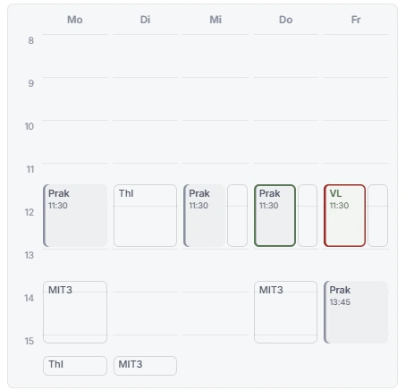

Folia · Modulseite · Termine · zweite Runde, 3. November 2026
Was zum Modul gehört
Auf der Seite eines Moduls zeigt die Woche seine Termine und daneben, was dein Stundenplan zur selben Zeit hat. In der ersten Runde hast du C gewählt: Dein Plan liegt als grauer Grund unten, die Termine des Moduls liegen als Karten darauf. Jetzt zeigen die Karten auch, was für Termine es sind. Was man besuchen muss, ist voll in der Farbe des Moduls, was man wählt oder dazunehmen kann, hat eine Textur. Beim Programmierpraktikum heißt das: Die Vorlesung ist voll, die vier Praktika sind schraffiert, denn du besuchst eine der vier Gruppen.
„Also ich finde die ebenen am Besten (C). Aber ich würde gerne die Termine so haben, dass die normalen voll mit farbe gezeigt werden und die optionalen/wahtermine mit schraffur oder anderer textur.“ — du, zur ersten Runde
Was jetzt gilt
Pflicht ist voll in der Farbe des Moduls, mit heller Schrift: alles, was man besuchen muss.
Wahl ist schraffiert: die Gruppen einer Veranstaltung, von denen du eine besuchst (die vier Praktika, „eine von 4“), und die Optionen einer Wahl zwischen Veranstaltungen.
Zusatz ist gepunktet: Freiwilliges neben dem Pflichtteil, etwa ein Tutorium.
Deine Gruppe wird voll. Steht das Modul in deinem Plan und ist dort eine Gruppe gewählt, wird sie voll und trägt ein ✓. Die anderen bleiben schraffiert.
Wie in C: dein Plan als grauer Grund, rechts 14 px frei mit seinem Namen senkrecht, rot nur, was kollidiert, die gerissene Kante mit der Uhrzeit darunter.
Offen neben der Woche ist eine Karte mit Ring und Schatten, denn voll heißt jetzt Pflicht.
Zweite Runde · C mit Pflicht, Wahl und Zusatz
Die Woche des Programmierpraktikums
Die Vorlesung ist Pflicht und steht voll in der Farbe des Moduls. Die vier Praktika sind Gruppen, von denen du eine besuchst, deshalb sind sie schraffiert. Hier oben stellst du ein, welche Gruppe in deinem Stundenplan gewählt ist und welche Textur Wahl und Zusatz haben; alles darunter folgt.
Im Stundenplan gewähltkeine, denn das PP steht nicht in deinem Plan
Wahl
Zusatz
Klick auf einen Termin des Moduls: So sieht er aus, wenn er neben der Woche offen ist.
Was man sieht
Montags und freitags sind die Praktika frei. Mittwochs und donnerstags liegt ThI darunter, das zeigt der graue Streifen.
Die Vorlesung am Freitag ist Pflicht und überschneidet sich mit dem Softwarepraktikum: voll, darunter rot, dazu ein „!“.
Wählst du oben die Gruppe am Donnerstag, wird sie voll und rot, denn ThI hat dort Vorlesung. Mit Montag passt alles.
Rechts bei „Alle Arten“: Pflicht, Einzeltermine, Wahl, deine Gruppe und Zusatz nebeneinander.
Woher Betula es weiß
Die Gruppen einer Veranstaltung kennt der Stundenplan schon: Die Termin-Ansicht sagt „Praktikumsgruppen · eine von 4“ (Attendance::OneOf).
Die Optionen einer Wahl und die Zusätze kennt die Modulseite schon. Heute sind sie gestrichelt und gepunktet umrandet.
Welche Gruppe du gewählt hast, steht in deinem Plan. Den lädt die Modulseite für die Überschneidungen ohnehin.
Worauf zu achten ist
Im Stundenplan heißt eine breite Schraffur heute „nur besuchen“. Die Schraffur der Wahl ist feiner und andersherum geneigt (Frage 4).
Schrift auf einer Textur braucht Kontrast. Deshalb bleiben die Streifen hell und die Schrift kräftig.
Steht das Modul nicht in deinem Plan, ist keine Gruppe gewählt, und alles, was zur Wahl steht, ist schraffiert.
Die Fälle, heute und in der zweiten Runde
Ausschnitte der Woche so breit wie am Rechner (ein Tag 74 px), „Am Handy“ so breit wie bei einem Handy von 360 px (53 px). Die Texturen folgen der Einstellung oben. Wo Beispiel steht, sind die Termine ausgedacht.
Fragen der zweiten Runde
Jeweils mit meinem Vorschlag. Ein „passt“ reicht, wo du zustimmst.
Welche Texturen? Schraffur für die Wahl und Punkte für den Zusatz, oder eine andere Kombination von oben?Vorschlag: Schraffur und Punkte.
Deine Gruppe voll? Steht das Modul in deinem Plan und ist eine Gruppe gewählt, wird sie voll und trägt ein ✓, die anderen bleiben schraffiert.Vorschlag: ja.
Einzeltermine? Sie sind Pflicht, finden aber nicht jede Woche statt. Voll und heller, oder voll wie alles andere?Vorschlag: voll und heller.
Schraffur im Stundenplan? Dort heißt eine breite Schraffur heute „nur besuchen“. Soll die Wahl dort genauso aussehen wie hier (dann bräuchte der Besuch ein anderes Zeichen), oder bleibt der Stundenplan, wie er ist?Vorschlag: vorerst nur die Modulseite, der Stundenplan bleibt.
Aus der ersten Runde so umgesetzt, bis du etwas anderes sagst
Die Farbe des Moduls ist seine aus deinem Plan, ohne Plan Betulas Grün.
Der Name im Streifen liest sich von unten nach oben.
Eine Zeile Legende unter der Woche, wenn der Plan daneben steht.
Das ruhigere Raster (Stunden an den Linien, das Ende beschriftet, keine Rahmen um Flächen) gilt auch im Stundenplan; seine Farben bleiben.
Was heute schiefgeht
Dein Screenshot von heute (Folia 1.59.3): die Woche des Programmierpraktikums auf seiner Seite, daneben die Termine deines Plans. Do 11:30 ist der Termin, der gerade neben der Woche offen ist.

1234
Programmierpraktikum (12102), WiSe 2026/27, Kurs am Zentralcampus
Zwei Farben für ein Modul. Die VL ist hellgrün, die Praktika sind grau mit grauem Strich. Dieses Grau ist das Grau des Plans: Was zum Modul gehört, sieht aus wie das, was nicht dazugehört. Die Farbe sagt die Art (VL oder nicht), nicht das Modul.
Leere Streifen. Mi, Do und Fr steht neben dem Termin ein Rahmen ohne Namen. Dort liegen ThI (Übung, Vorlesung) und das Softwarepraktikum. Der Streifen ist halb so breit wie der Termin, sein Name passt nicht hinein und wird ausgeblendet.
Ohne Zeichen abgeschnitten. ThI am Montag (Tutorium) und MIT3 am Dienstag gehen bis 17:00. Die Woche endet um 16:00, und beide sehen aus wie halbstündige Termine. Was ganz nach 16:00 liegt, fehlt ohne Hinweis.
Rahmen um Rahmen. Grün für den offenen Termin, Rot für den Konflikt, Grau um jeden Termin des Plans, dazu der Kasten der Woche und Stundenlinien durch die leeren Kästen. Alles ist umrandet, darum tritt nichts hervor.
Erste Runde: A Kräftig, B Spur, C EbenenDie drei Konzepte vom 3. November, die Fälle mit allen dreien, der Vergleich und die Fragen
Was die erste Runde wollte
„aktuell ist es nicht gut zu erkennen, was jetzt zu dem modul gehört. Dazu sollte es auch so sein, dass wenn sich ein termin überschneidet, dass der großteil zu dem Modultermin geht und da nur ein kleiner streifen daneben ist, mit vertikalem text. Es muss auch erkennbar sein, wenn termine abgeschnitten sind. Und ganz generell muss das ganze einfach cleaner werden.“ — du, zu deinem Screenshot
In allen drei Konzepten gleich
Eine Farbe für das Modul. Alle seine Termine in seiner Farbe aus deinem Stundenplan, hier Violett wie im Kopf der Termin-Ansicht. Was ein Termin ist (VL, Prak), sagt die Beschriftung, nicht die Farbe.
Dein Plan ist grau und trägt den Kurznamen seines Moduls: ThI, MIT3, SWP. Kein Rahmen mehr um jeden Termin des Plans.
Überschneidung: Der Termin des Moduls behält die Breite bis auf einen Streifen von 13 bis 14 px. Darin steht der Plan, sein Name senkrecht, von unten nach oben gelesen.
Konflikt: Rot ist nur, was kollidiert, also der Streifen des Plans, dazu ein „!“ am Termin des Moduls. Der rote Rahmen um den Termin fällt weg.
Abgeschnitten ist sichtbar: eine offene Kante am Rand der Woche, darunter, bis wann es geht. Das Ende der Woche ist beschriftet (16).
Ruhiger: keine Rahmen um gefüllte Flächen, leisere Stundenlinien, die Stunden an den Linien statt in den Zeilen.
AKräftig
Das Modul in voller Farbe, dein Plan als flache graue Fläche. Neben einem Termin des Moduls wird der Plan zum Streifen.
Klick auf einen Termin des Moduls: So sieht er aus, wenn er neben der Woche offen ist.
So geht es
Jeder Termin des Moduls ist eine volle Fläche in seiner Farbe, die Schrift hell. Was er ist, steht darauf: VL, Prak.
Dein Plan ist eine flache graue Fläche mit dem Kurznamen seines Moduls, ohne Rahmen.
Überschneiden sie sich, bleibt der Termin des Moduls breit, der Plan rückt in einen Streifen von 13 px am rechten Rand, senkrecht beschriftet.
Konflikt: Der Streifen wird rot, der Termin bekommt ein „!“.
Offen neben der Woche: ein Ring im Abstand von 2 px in der Farbe des Moduls.
Abgeschnitten: Die Fläche läuft zum Rand hin aus, unter der Woche steht „bis 17:00“.
Gut
Am deutlichsten, was zum Modul gehört, auch aus dem Augenwinkel, in Graustufen und bei Farbsehschwäche.
Genau die Ordnung, die du beschrieben hast. Im Code die kleinste Änderung: Die schmale Spur gibt es schon, sie wird fest 13 px breit und beschriftet.
Grau heißt nur noch „dein Plan“.
Schwächer
Fünf volle violette Flächen sind laut.
Die vier Praktikumsgruppen (eine davon wählst du) wirken wie vier Pflichttermine. Das tun sie heute auch.
Das Auslaufen ist ein leises Zeichen. Erst die Uhrzeit darunter sagt sicher, dass es weitergeht.
BSpur
Jeder Tag hat am rechten Rand eine Spur für deinen Plan. Das Modul hat den Rest des Tages für sich.
Klick auf einen Termin des Moduls: So sieht er aus, wenn er neben der Woche offen ist.
So geht es
Rechts in jedem Tag läuft eine schmale Spur (13 px) von oben bis unten, wie die Spur eines eigenen Kalenders im Stundenplan.
Alles aus deinem Plan steht in dieser Spur, senkrecht beschriftet, ob es sich mit dem Modul überschneidet oder nicht.
Die Termine des Moduls füllen den Rest, getönt wie im Stundenplan: Fläche und Strich links in seiner Farbe. Offen neben der Woche ist einer voll in der Farbe.
Konflikt: Das Stück der Spur ist rot, der Termin bekommt ein „!“.
Abgeschnitten: Das Stück endet am Rand in einer Spitze. Unter der Woche steht, was weitergeht und bis wann.
Gut
Am ruhigsten: Jede Spalte hat dieselbe Ordnung, und keine Breite ändert sich, wenn der Plan nachgeladen ist.
Eine Überschneidung ist ein Termin mit einem grauen Stück direkt daneben, ein Konflikt einer mit einem roten.
Dieselbe Form wie eigene Kalender als Spur im Stundenplan.
Schwächer
Dein Plan ist überall nur ein Streifen, auch dienstags, wenn das Modul nichts hat. Wann du frei bist, liest man schlechter.
Ein Name passt erst in ein Stück ab etwa 40 Minuten. Kürzere zeigen ihn nur, wenn man darauf zeigt.
Weicht am weitesten von heute ab: Auch Termine des Plans ohne Überschneidung werden schmal.
CEbenen
Dein Plan liegt unten in voller Breite, die Termine des Moduls liegen als Karten darauf.
Klick auf einen Termin des Moduls: So sieht er aus, wenn er neben der Woche offen ist.
So geht es
Dein Plan ist eine graue Fläche über die ganze Breite des Tages, hinter allem.
Die Termine des Moduls sind Karten: hell getönt, Rand in seiner Farbe, ein leichter Schatten. Offen neben der Woche ist eine voll in der Farbe.
Wo eine Karte auf dem Plan liegt, lässt sie rechts 14 px frei. Dort schaut der Plan heraus, mit seinem Namen senkrecht.
Überschneidet es sich nur zum Teil, sieht man den Plan außerhalb der Karte in voller Breite (unten bei „Teilweise“).
Konflikt: Was unter der Karte liegt, ist rot getönt, die Karte bekommt ein „!“.
Abgeschnitten: Die Kante am Rand ist gerissen, unter der Woche steht „bis 17:00“.
Die Woche ohne Kasten, die Linien über alle Tage.
Gut
Die Ordnung erklärt sich selbst: vorne das Modul, hinten dein Plan.
Teilweise Überschneidungen sind genau, nicht ganz oder gar nicht.
Die gerissene Kante sagt am deutlichsten „hier geht es weiter“.
Schwächer
Schatten und Ebenen hat Betula sonst nur für Menüs und Sheets. Im Raster wären sie neu.
Hell getönte Karten treten weniger hervor als die vollen Flächen von A.
Mehr Arbeit: zwei Ebenen, die freie Kante je Karte, die gerissene Kante.
Die Fälle nebeneinander
Ausschnitte der Woche, jeweils heute und in A, B und C, so breit wie am Rechner (ein Tag 74 px), „Am Handy“ so breit wie dort (53 px). Wo Beispiel steht, sind die Termine ausgedacht, alle anderen stammen aus dem Snapshot vom 3. November.
Im Vergleich
A Kräftig
B Spur
C Ebenen
Was zum Modul gehört
am deutlichsten: volle Fläche gegen Grau
deutlich: getönt, der Plan nur am Rand
deutlich: Karte vor grauem Grund
Überschneidung
Streifen mit Namen
immer dieselbe Spur
der Plan schaut heraus
Nur teilweise
der ganze Termin des Plans wird Streifen
in der Spur, genau
genau
Abgeschnitten
Auslaufen, die Zeit darunter
Spitze, eine Zeile darunter
gerissen, die Zeit darunter
Wann du frei bist
auf einen Blick
nur als Streifen
auf einen Blick
Ruhe
laut, wo viele Termine sind
am ruhigsten
ruhig
Am Handy
gut lesbar
gut lesbar
Karten treten weniger hervor
Aufwand
klein
mittel
größer
Empfehlung: A, mit der gerissenen Kante aus C
A trifft deinen Wunsch am direktesten. Dein Plan bleibt, wo er ist, und wird nur neben einem Termin des Moduls zum Streifen. Nirgends ist klarer, was zum Modul gehört.
Abgeschnitten: die gerissene Kante aus C, mit der Uhrzeit darunter. Das Auslaufen von A allein ist zu leise.
Lautstärke: voll nur, was jede Woche stattfindet. Einzeltermine, Optionen einer Wahl und Zusätze bleiben hell (unten bei „Arten von Terminen“).
B lohnt sich, wenn der Plan auf der Modulseite Nebensache sein soll. C lohnt sich, wenn teilweise Überschneidungen häufig sind; im Plan von heute gibt es keine.
Gebaut würde es in folia/crates/widgets/src/week.rs: Die Spur des Plans wird fest 13 px breit statt halb so breit wie der Termin, ihr Name senkrecht, und was abgeschnitten ist, trägt seine Uhrzeit. Dazu kommt app.css mit den Terminen des Moduls in seinem Ton, der Kante und dem ruhigeren Raster. Der Stundenplan zeichnet mit demselben Raster. Seine Farben blieben, nur das ruhigere Raster gälte dort auch (Frage 6).
Fragen an dich
Jeweils mit meinem Vorschlag. Ein „passt“ reicht, wo du zustimmst.
Welche Farbe hat das Modul? Seine aus deinem Stundenplan (das PP violett wie in der Termin-Ansicht daneben) oder auf der Modulseite immer Betulas Grün?Vorschlag: seine aus dem Plan, ohne Plan Grün.
Volle Fläche oder getönt? Voll wie in A, oder getönt wie im Stundenplan (B)?Vorschlag: voll, aber nur für wöchentliche Termine.
Leserichtung im Streifen? Von unten nach oben wie ein deutscher Buchrücken, oder von oben nach unten?Vorschlag: von unten nach oben.
Plan ohne Überschneidung? In voller Breite (A, C) oder auch dort als Streifen (B)?Vorschlag: volle Breite.
Welches Zeichen für abgeschnitten? Gerissen (C), Auslaufen (A) oder Spitze (B), und soll die Uhrzeit darunter stehen?Vorschlag: gerissen, mit „bis 17:00“ darunter.
Auch im Stundenplan? Das ruhigere Raster (Stunden an den Linien, das Ende beschriftet, keine Rahmen um gefüllte Flächen) auch dort?Vorschlag: ja, die Farben des Stundenplans bleiben.
Eine Legende? Eine Zeile unter der Woche, die sagt, was Farbe und was Grau ist, wenn der Plan daneben steht?Vorschlag: ja, eine Zeile.
Daten: betula.app, Snapshot vom 3. November 2026. Programmierpraktikum (12102) am Zentralcampus: Praktikum Mo, Mi, Do 11:30–13:00 und Fr 13:45–15:15, Vorlesung Fr 11:30–13:00 (A-Woche). Daneben, wie auf deinem Screenshot: Theoretische Informatik (Vorlesung Di und Do 11:30, Übung Mi 11:30, Tutorium Mo 15:30–17:00), Mathematik IT-3 (Vorlesung Mo 13:45 und Di 15:30–17:00, Übung Do 13:45), Softwarepraktikum (Praktikum Fr 11:30). Die Woche wird mit der Rechnung von week.rs gezeichnet: 48 px die Stunde, von 8:00 bis zur vollen Stunde nach dem letzten Termin des Moduls, der Plan daran abgeschnitten. Nichts davon ist gebaut.